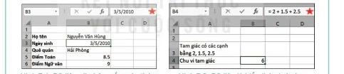
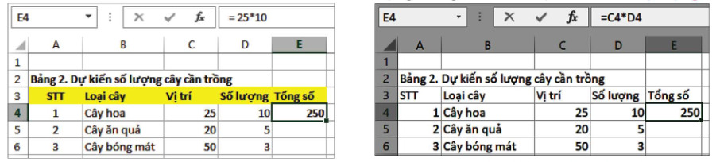
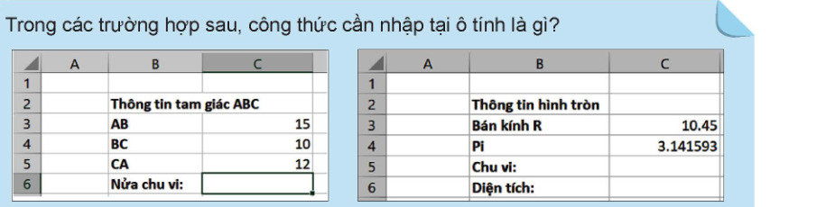
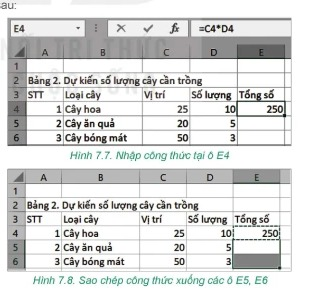

Dành cho giáo viên
Theo dõi lớp
| Học sinh / Nhóm | Đã nộp | Cập nhật |
|---|
Bước 1
1 Khởi động
Khám phá Hình ảnh khởi động
Trò chuyện Cùng An, Minh và Khoa
Đoạn trò chuyện gợi mở (không có trong SGK)
Minh: Tớ đã nhập xong số cây của từng lớp vào bảng tính rồi.
An: Giờ tính tổng số cây, tớ lấy máy tính bỏ túi bấm nhé?
Khoa: Không cần đâu! Gõ công thức vào ô là bảng tính tự tính, sửa số là kết quả tự đổi.
An: Giờ tính tổng số cây, tớ lấy máy tính bỏ túi bấm nhé?
Khoa: Không cần đâu! Gõ công thức vào ô là bảng tính tự tính, sửa số là kết quả tự đổi.
Khởi động Nhập công thức được không?
Trong bài trước em đã biết nhập dữ liệu dạng số, văn bản và thời gian vào bảng tính. Có thể nhập dữ liệu là công thức tính toán được không? Khi thực hiện dự án Trường học xanh, em cần tính toán rất nhiều. Hãy tìm hiểu các công cụ tính toán đó của phần mềm bảng tính để có thể sử dụng cho dự án.
Ghi bài Khởi động
Sau khi thầy cô chốt, em chép nội dung dưới đây vào vở.
Bước 2 · Hình thành kiến thức mới
2.1 Kiểu dữ liệu trên bảng tính
Hoạt động 1 Nhận biết kiểu dữ liệu trên bảng tính
Quan sát các ô dữ liệu, vùng nhập dữ liệu (có hình ngôi sao) trong Hình 7.1, Hình 7.2 và cho biết: 1. Bảng tính điện tử nhận biết được các kiểu dữ liệu nào? 2. Các kiểu dữ liệu đó được thể hiện như thế nào trên bảng tính?

Thử trên bảng mô phỏng: nháy vào từng ô để xem kiểu dữ liệu; nháy vào ô E5 để thấy vùng nhập dữ liệu hiện công thức còn ô hiện kết quả. Nhập thêm dữ liệu của em.
Đọc hiểu Công thức và kí hiệu phép toán
Đọc mục 1 (SGK trang 34). Khi nhập dữ liệu vào các ô trong trang tính, phần mềm sẽ tự động nhận biết được kiểu dữ liệu đã nhập và hiển thị theo khuôn dạng mặc định. Các kiểu dữ liệu cơ bản phần mềm nhận dạng được là văn bản, số, ngày tháng,… Khả năng hỗ trợ tính toán là đặc trưng ưu việt của các phần mềm bảng tính. Em có thể sử dụng công thức để thực hiện các tính toán với dữ liệu một cách nhanh chóng. Công thức có dạng các biểu thức toán học được nhập trực tiếp vào ô tính. Muốn nhập công thức cần gõ dấu “=” đầu tiên, sau đó gõ biểu thức. Các phép toán đơn giản là phép cộng (+), trừ (–), nhân (*), chia (/) và luỹ thừa (^). Công thức tính toán có thể chứa các số, phép toán và các dấu ngoặc tròn. Thứ tự thực hiện các phép toán trong công thức giống như trong các biểu thức toán học.
| Phép toán | Kí hiệu toán | Kí hiệu trong bảng tính | Ví dụ |
|---|---|---|---|
| Phép cộng | + | + | 20 + 7 |
| Phép trừ | – | – | 42 – 35 |
| Phép nhân | × | * | 7*9 |
| Phép chia | : | / | 35/7 |
| Phép luỹ thừa | ax | a^x | 5^3 |
Ghi bài 1. Kiểu dữ liệu
Sau khi thầy cô chốt, em chép nội dung dưới đây vào vở.
Bước 2 · Hình thành kiến thức mới
2.2 Công thức trong bảng tính
Hoạt động 2 Nhập công thức vào bảng tính
Em hãy cho biết, nếu nhập công thức vào một ô tính và tính toán với giá trị nằm ở các ô khác thì phải làm thế nào?
Đọc mục 2 (SGK trang 35). Nếu em muốn tính Tổng số cây hoa ở ô E4 trong Bảng 2. Dự kiến số lượng cây cần trồng (Hình 7.3), thì em cần lấy số vị trí (là dữ liệu ở ô C4) nhân với số lượng cây ở mỗi vị trí (là dữ liệu ở ô D4). Có hai cách tính:
Đọc mục 2 (SGK trang 35). Nếu em muốn tính Tổng số cây hoa ở ô E4 trong Bảng 2. Dự kiến số lượng cây cần trồng (Hình 7.3), thì em cần lấy số vị trí (là dữ liệu ở ô C4) nhân với số lượng cây ở mỗi vị trí (là dữ liệu ở ô D4). Có hai cách tính:
- Cách 1. Nhập vào ô E4 công thức với giá trị số lấy từ các ô C4, D4: nhập = 25*10 (Hình 7.3).
- Cách 2. Nhập vào ô E4 công thức với các địa chỉ ô C4, D4: nhập = C4*D4 (Hình 7.4).

Thử trên bảng mô phỏng: nhập =C4*D4 vào E4, nhập =25*10 vào một ô khác, rồi sửa D4 thành 12 và quan sát ô nào tự động cập nhật. Sau đó làm tiếp Hoạt động 3 (sao chép E4 xuống E5, E6) trên cùng bảng này.
Câu hỏi SGK trang 36
Trong các trường hợp sau, công thức cần nhập tại ô tính là gì?

Ghi bài 2. Công thức trong bảng tính
Sau khi thầy cô chốt, em chép nội dung dưới đây vào vở.
Bước 2 · Hình thành kiến thức mới
2.3 Sao chép ô tính chứa công thức
Hoạt động 3 Sao chép ô tính chứa công thức
1. Khi sao chép ô tính chứa công thức hoặc vùng có chứa công thức thì các công thức này sẽ được sao chép như thế nào? 2. Chức năng tính toán tự động của công thức có được bảo toàn hay không khi sao chép dữ liệu? Nếu có thì được thể hiện như thế nào?
Đọc mục 3 (SGK trang 36). Muốn sao chép công thức tính tổng số cây hoa cần trồng từ ô E4 xuống các ô phía dưới (E5, E6) để tính Tổng số cho các loại cây khác:
Đọc mục 3 (SGK trang 36). Muốn sao chép công thức tính tổng số cây hoa cần trồng từ ô E4 xuống các ô phía dưới (E5, E6) để tính Tổng số cho các loại cây khác:
- Bước 1. Chọn ô tính chứa dữ liệu cần sao chép (ô E4).
- Bước 2. Nhấn tổ hợp phím Ctrl+C để sao chép dữ liệu (có công thức).
- Bước 3. Đánh dấu vùng muốn sao chép dữ liệu đến (E5:E6).
- Bước 4. Nhấn tổ hợp phím Ctrl+V để dán dữ liệu.

Làm trên bảng mô phỏng ở mục 2.2: chọn E4 → bấm Sao chép (Ctrl+C) → kéo chọn E5:E6 → bấm Dán (Ctrl+V), rồi nháy vào E6 để xem công thức.
Câu hỏi SGK trang 37
Ghi bài 3. Sao chép công thức
Sau khi thầy cô chốt, em chép nội dung dưới đây vào vở.
Bước 2 · Thực hành
2.4 Thực hành: Nhập thông tin dự kiến số lượng cây cần trồng của dự án
Nhiệm vụ Dự kiến số lượng cây cần trồng
Nhiệm vụ: tạo trang tính mới trong bảng tính của dự án để nhập dữ liệu dự kiến số lượng cây trồng; nhập dữ liệu; thiết lập công thức tính tổng số cây mỗi loại và tổng số cây của tất cả các loại; định dạng dữ liệu cho trang tính.
Hướng dẫn:
Hướng dẫn:
- Bước 1. Mở tệp THXanh.xlsx.
- Bước 2. Nháy chuột vào nút ⊕ tại vùng tên trang tính để tạo trang tính mới. Nhập tên trang tính là 2. Dự kiến số lượng cây và nhập dữ liệu như Hình 7.9 (đã nhập sẵn trên bảng mô phỏng).
- Bước 3. Nhập công thức = C4*D4 vào ô E4, sau đó sao chép công thức này xuống các ô E5 và E6.
- Bước 4. Tại ô E7 thiết lập công thức tính tổng của cả ba loại cây dự kiến trồng: nhập = E4+E5+E6.
- Bước 5. Định dạng chữ đậm và màu nền vàng cho ô A2 và hàng tiêu đề của bảng (hàng 3). Cột STT căn giữa. Điều chỉnh độ rộng cột để hiển thị đủ dữ liệu.
- Bước 6. Lưu lại kết quả.
Ghi bài 4. Thực hành
Sau khi thầy cô chốt, em chép nội dung dưới đây vào vở.
Bước 3
3 Luyện tập
Luyện tập Trang tính 3. Tìm hiểu giống cây
1. Em hãy tạo một trang tính mới trong bảng tính của dự án, đặt tên là 3. Tìm hiểu giống cây. Tiến hành nhập dữ liệu là danh sách các loại cây cụ thể và đơn giá. Định dạng cho trang tính như Hình 7.10 và lưu lại kết quả.
2. Nhập công thức = D4 * E4 vào ô F4. Sao chép ô F4 xuống các ô từ F5 đến F19 để tính giá trị của cột Thành tiền. (Dữ liệu Hình 7.10 đã nhập sẵn trên bảng mô phỏng.)
2. Nhập công thức = D4 * E4 vào ô F4. Sao chép ô F4 xuống các ô từ F5 đến F19 để tính giá trị của cột Thành tiền. (Dữ liệu Hình 7.10 đã nhập sẵn trên bảng mô phỏng.)
Ghi bài Luyện tập
Sau khi thầy cô chốt, em chép nội dung dưới đây vào vở.
Bước 4
4 Vận dụng
Vận dụng Căn lề, diện tích rừng
Câu 2. Dữ liệu diện tích phủ rừng các tỉnh vùng Đông Bắc (Hình 7.11, đơn vị: ha) đã nhập sẵn trên bảng mô phỏng.
Ghi bài Vận dụng
Sau khi thầy cô chốt, em chép nội dung dưới đây vào vở.